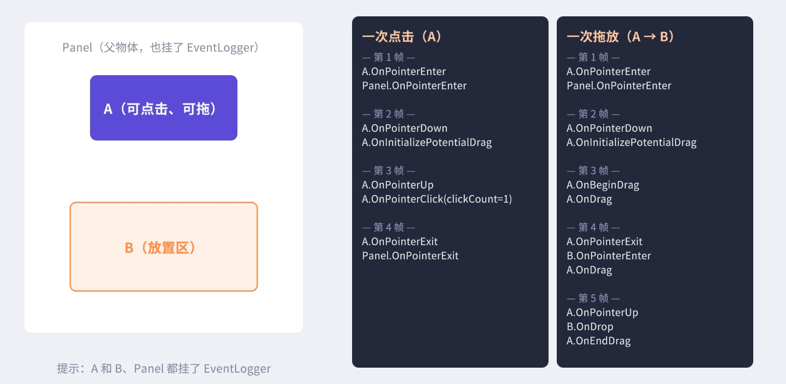
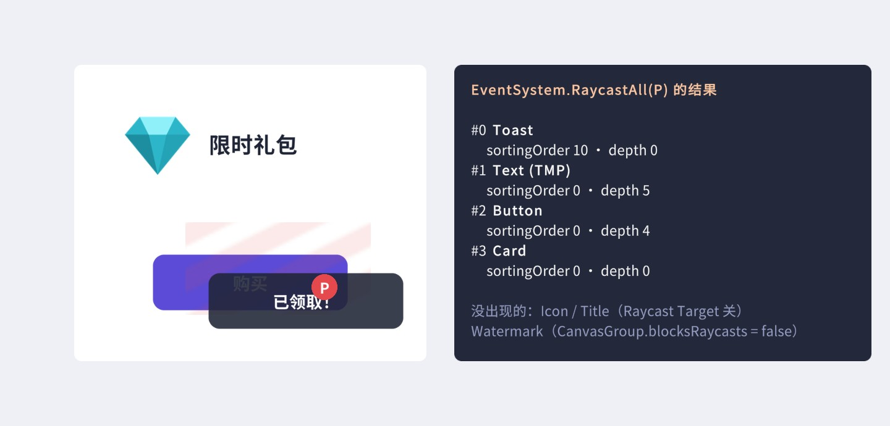
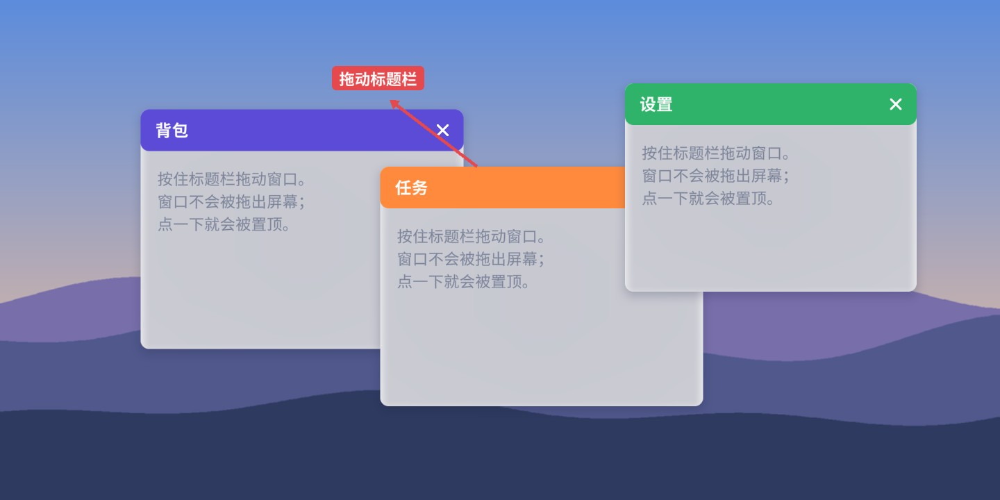
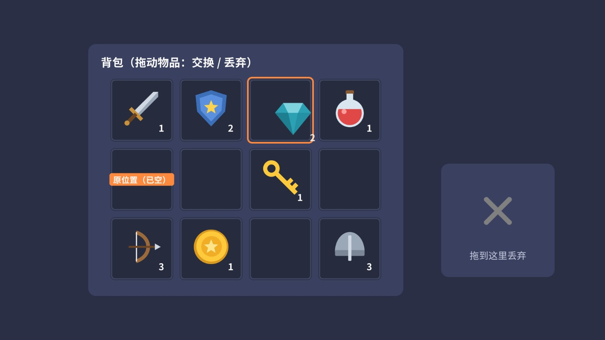
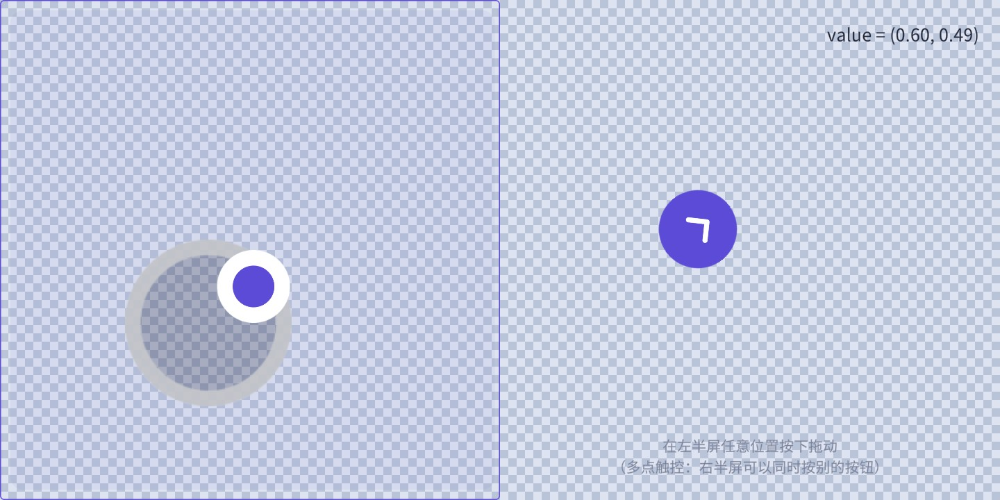
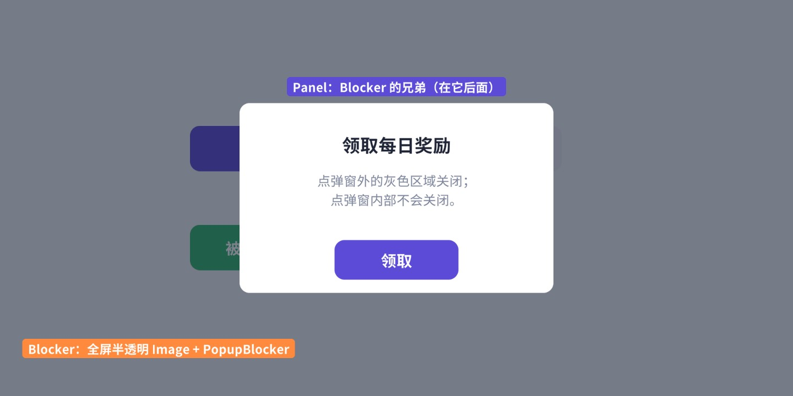
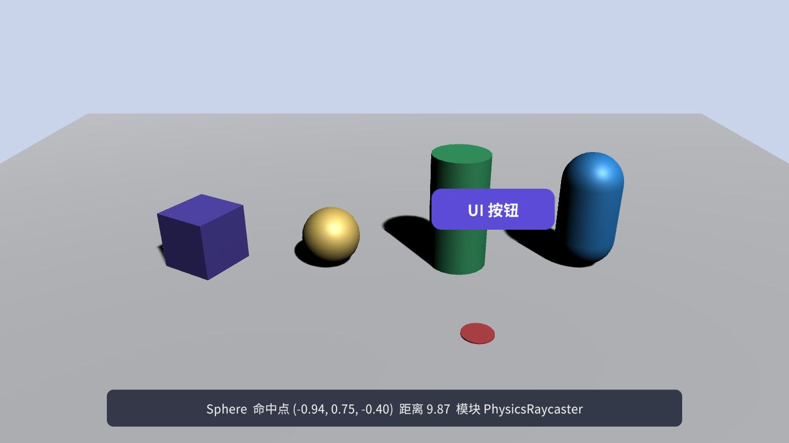
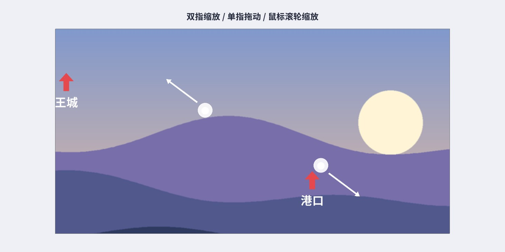
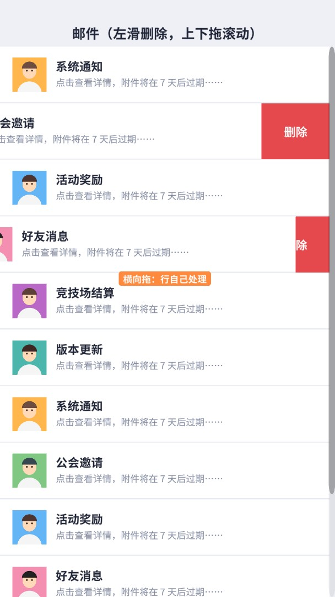

按钮能点、列表能滑、背包能拖——这些都建立在 EventSystem 之上。本章从“一次点击”出发，沿着源码走完从读取输入、射线检测、排序、冒泡到回调的全过程，并在配套工程里驱动真实的输入模块，录下事件发生的真实顺序。然后用七个案例把拖拽、多点触控、3D 物体点击和事件转发全部做一遍。
新建一个 Canvas 时，Unity 会顺手建一个叫 EventSystem 的物体，上面挂着 EventSystem 和 Standalone Input Module；Canvas 上则自带一个 Graphic Raycaster。这三个组件就是 UGUI 事件系统的全部骨架：
RaycastAll，把所有射线检测器的结果汇总、排序。场景里应当只有一个。
InputModule翻译官。读取原始输入（鼠标、触摸、键盘、手柄），换算成 PointerEventData，决定这一帧该发哪些事件、发给谁。内置的是 StandaloneInputModule（旧 Input Manager），Input System 包提供 InputSystemUIInputModule。
Raycaster眼睛。回答“屏幕上这一点下面有什么”。GraphicRaycaster 检测 UI 图形，PhysicsRaycaster 检测 3D 碰撞体，Physics2DRaycaster 检测 2D 碰撞体。每个 Canvas 一个 GraphicRaycaster，每个相机可以挂一个物理射线检测器。新手最常遇到的“按钮点了没反应”，十有八九就是这三件里少了一件：场景里没有 EventSystem（复制界面到新场景时最容易丢）、Canvas 上的 GraphicRaycaster 被删了、或者 Active Input Handling 设成了只用新 Input System 却还挂着 StandaloneInputModule。理解了这三者的分工，排查就有了方向。
EventSystem 本身的逻辑很少，核心就是 Update：
// 摘自 com.unity.ugui 1.0.0 Runtime/EventSystem/EventSystem.cs
protected virtual void Update()
{
if (current != this)
return;
TickModules();
bool changedModule = false;
var systemInputModulesCount = m_SystemInputModules.Count;
for (var i = 0; i < systemInputModulesCount; i++)
{
var module = m_SystemInputModules[i];
if (module.IsModuleSupported() && module.ShouldActivateModule())
{
if (m_CurrentInputModule != module)
{
ChangeEventModule(module);
changedModule = true;
}
break;
}
}
// no event module set... set the first valid one...
if (m_CurrentInputModule == null)
{
// ……找第一个 IsModuleSupported 的模块
}
if (!changedModule && m_CurrentInputModule != null)
m_CurrentInputModule.Process();
// ……（编辑器下：场景里不止一个 EventSystem 时打警告）
}
几个值得注意的点：
EventSystem.current 会工作。current 是静态列表里的第一个（最早启用的那个），其他 EventSystem 的 Update 直接 return。所以场景叠加加载时出现两个 EventSystem，后加载的那个是“摆设”，编辑器还会每帧打警告。EventSystem 还维护着“当前选中的物体”。它和悬停、按下是完全不同的概念：悬停跟着指针走，选中则是一个持久状态，键盘方向键、手柄摇杆、回车键的事件都发给它。设置选中的唯一入口是 SetSelectedGameObject：
// 摘自 EventSystem.cs
public void SetSelectedGameObject(GameObject selected, BaseEventData pointer)
{
if (m_SelectionGuard)
{
Debug.LogError("Attempting to select " + selected + "while already selecting an object.");
return;
}
m_SelectionGuard = true;
if (selected == m_CurrentSelected)
{
m_SelectionGuard = false;
return;
}
// Debug.Log("Selection: new (" + selected + ") old (" + m_CurrentSelected + ")");
ExecuteEvents.Execute(m_CurrentSelected, pointer, ExecuteEvents.deselectHandler);
m_CurrentSelected = selected;
ExecuteEvents.Execute(m_CurrentSelected, pointer, ExecuteEvents.selectHandler);
m_SelectionGuard = false;
}
先给旧的发 OnDeselect，再给新的发 OnSelect。m_SelectionGuard 防止在 OnSelect / OnDeselect 回调里再次调用它（那会打出“while already selecting”的错误）——如果你需要在失去选中时把选中转移到别处，要延后一帧再做。鼠标按下时，输入模块会调用 DeselectIfSelectionChanged：如果按下的东西不是当前选中的物体（沿父链找 ISelectHandler），就先把选中清空；Selectable 自己在 OnPointerDown 里再把自己设为选中。所以用鼠标点过一个按钮后，按钮会停在 Selected 状态（第 6 章的按钮“点完一直高亮”就是这个原因），点一下空白处才会取消。EventSystem 的 First Selected 字段决定输入模块激活时默认选中谁，做手柄菜单时一定要设置它。
另一个重要方法是 RaycastAll：遍历 RaycasterManager 里登记的所有射线检测器（每个 BaseRaycaster 在 OnEnable 时登记），让它们把结果追加到同一个列表里，最后用 RaycastComparer 排序。排序规则在 11.4 节讲。
Process 是输入模块每帧的入口：
// 摘自 Runtime/EventSystem/InputModules/StandaloneInputModule.cs
public override void Process()
{
if (!eventSystem.isFocused && ShouldIgnoreEventsOnNoFocus())
return;
bool usedEvent = SendUpdateEventToSelectedObject();
// case 1004066 - touch / mouse events should be processed before navigation events in case
// they change the current selected gameobject and the submit button is a touch / mouse button.
// touch needs to take precedence because of the mouse emulation layer
if (!ProcessTouchEvents() && input.mousePresent)
ProcessMouseEvent();
if (eventSystem.sendNavigationEvents)
{
if (!usedEvent)
usedEvent |= SendMoveEventToSelectedObject();
if (!usedEvent)
SendSubmitEventToSelectedObject();
}
}
顺序是：先给当前选中物体发 OnUpdateSelected（InputField 靠它每帧处理键盘输入）→ 有触摸就处理触摸，没有就处理鼠标 → 最后处理键盘/手柄导航（方向键 Move、回车 Submit、Esc Cancel）。注意第一行：窗口失去焦点时整个模块停止工作，这就是“编辑器里点了 Game 视图之外的地方，UI 就不响应了”的原因。
// 摘自 StandaloneInputModule.cs
protected void ProcessMouseEvent(int id)
{
var mouseData = GetMousePointerEventData(id);
var leftButtonData = mouseData.GetButtonState(PointerEventData.InputButton.Left).eventData;
m_CurrentFocusedGameObject = leftButtonData.buttonData.pointerCurrentRaycast.gameObject;
// Process the first mouse button fully
ProcessMousePress(leftButtonData);
ProcessMove(leftButtonData.buttonData);
ProcessDrag(leftButtonData.buttonData);
// Now process right / middle clicks
ProcessMousePress(mouseData.GetButtonState(PointerEventData.InputButton.Right).eventData);
ProcessDrag(mouseData.GetButtonState(PointerEventData.InputButton.Right).eventData.buttonData);
ProcessMousePress(mouseData.GetButtonState(PointerEventData.InputButton.Middle).eventData);
ProcessDrag(mouseData.GetButtonState(PointerEventData.InputButton.Middle).eventData.buttonData);
if (!Mathf.Approximately(leftButtonData.buttonData.scrollDelta.sqrMagnitude, 0.0f))
{
var scrollHandler = ExecuteEvents.GetEventHandler<IScrollHandler>(leftButtonData.buttonData.pointerCurrentRaycast.gameObject);
ExecuteEvents.ExecuteHierarchy(scrollHandler, leftButtonData.buttonData, ExecuteEvents.scrollHandler);
}
}
GetMousePointerEventData（在父类 PointerInputModule 里）先更新左键的 PointerEventData：位置、与上一帧的差 delta、滚轮，然后做一次 RaycastAll，取排序后的第一个结果存进 pointerCurrentRaycast；右键、中键的数据从左键复制。也就是说，鼠标每一帧都会做一次完整的射线检测，不管你有没有按键。
接下来对左键依次处理按下/抬起（ProcessMousePress）、悬停进出（ProcessMove）、拖拽（ProcessDrag）。
// 摘自 StandaloneInputModule.cs（ProcessMousePress，按下分支节选）
pointerEvent.eligibleForClick = true;
pointerEvent.delta = Vector2.zero;
pointerEvent.dragging = false;
pointerEvent.useDragThreshold = true;
pointerEvent.pressPosition = pointerEvent.position;
pointerEvent.pointerPressRaycast = pointerEvent.pointerCurrentRaycast;
DeselectIfSelectionChanged(currentOverGo, pointerEvent);
// ……（双击计时重置）
var newPressed = ExecuteEvents.ExecuteHierarchy(currentOverGo, pointerEvent, ExecuteEvents.pointerDownHandler);
var newClick = ExecuteEvents.GetEventHandler<IPointerClickHandler>(currentOverGo);
// didnt find a press handler... search for a click handler
if (newPressed == null)
newPressed = newClick;
// ……（clickCount：同一个物体在 0.3 秒内再次按下就累加）
pointerEvent.pointerPress = newPressed;
pointerEvent.rawPointerPress = currentOverGo;
pointerEvent.pointerClick = newClick;
pointerEvent.clickTime = time;
// Save the drag handler as well
pointerEvent.pointerDrag = ExecuteEvents.GetEventHandler<IDragHandler>(currentOverGo);
if (pointerEvent.pointerDrag != null)
ExecuteEvents.Execute(pointerEvent.pointerDrag, pointerEvent, ExecuteEvents.initializePotentialDrag);
按下的那一帧，模块从射线命中的物体（currentOverGo，往往是按钮里的文字或图标）出发，沿父链向上找三种处理者：第一个实现 IPointerDownHandler 的（立刻调用 OnPointerDown，记为 pointerPress）、第一个实现 IPointerClickHandler 的（先记下来，抬起时再判断）、第一个实现 IDragHandler 的（记为 pointerDrag，并立即发 OnInitializePotentialDrag）。三个处理者可以是不同的物体——比如列表项里的按钮处理点击，外层的 ScrollRect 处理拖拽。
// 摘自 StandaloneInputModule.cs（ReleaseMouse 节选）
ExecuteEvents.Execute(pointerEvent.pointerPress, pointerEvent, ExecuteEvents.pointerUpHandler);
var pointerClickHandler = ExecuteEvents.GetEventHandler<IPointerClickHandler>(currentOverGo);
// PointerClick and Drop events
if (pointerEvent.pointerClick == pointerClickHandler && pointerEvent.eligibleForClick)
{
ExecuteEvents.Execute(pointerEvent.pointerClick, pointerEvent, ExecuteEvents.pointerClickHandler);
}
if (pointerEvent.pointerDrag != null && pointerEvent.dragging)
{
ExecuteEvents.ExecuteHierarchy(currentOverGo, pointerEvent, ExecuteEvents.dropHandler);
}
// ……清空 pointerPress / rawPointerPress / pointerClick
if (pointerEvent.pointerDrag != null && pointerEvent.dragging)
ExecuteEvents.Execute(pointerEvent.pointerDrag, pointerEvent, ExecuteEvents.endDragHandler);
抬起时 OnPointerUp 总是发给按下时的那个物体（即使指针已经移走）；OnPointerClick 只有在“抬起处找到的点击处理者 == 按下时记下的点击处理者”并且 eligibleForClick 还为真时才发——这就是为什么在按钮上按下、拖到外面再松手不会触发点击。还要注意顺序：OnDrop 在 OnEndDrag 之前，案例 11.2 正是利用这一点判断物品有没有被某个格子接住。
悬停事件由 BaseInputModule.HandlePointerExitAndEnter 处理。它先用 FindCommonRoot 找到旧悬停物体与新悬停物体的公共祖先，然后从旧物体沿父链向上发 OnPointerExit，直到（不包括）公共祖先；再从新物体沿父链向上发 OnPointerEnter，同样到公共祖先为止。这意味着从子物体 A 移到同一父物体下的 B 时，父物体 Panel 不会收到 Exit 再 Enter——它一直处于悬停状态。PointerEventData 的 fullyExited、reentered 两个字段就是为了让处理者区分“真的离开了”和“只是移到了自己的子物体上”。BaseInputModule 还有一个序列化字段 m_SendPointerHoverToParent（默认 true），关掉后悬停事件遇到第一个处理者就停止向上传播，行为更接近点击事件。做“鼠标移到卡片上弹出详情”这类功能时，如果卡片内部有很多子元素，记得在 OnPointerExit 里检查 fullyExited，否则在子元素之间移动时详情框会闪烁。
读源码容易漏细节，不如直接录下来。配套工程里写了一个 ScriptedInput（继承 BaseInput，用代码“假装”鼠标），赋给输入模块的 inputOverride，就能在不进入 Play 模式的情况下驱动真实的 StandaloneInputModule。面板 Panel 和它里面的 A、B 都挂了一个记录所有事件的 EventLogger：

从图 11-2 可以读出很多源码里不太显眼的事实：
打开这个场景运行，在 A、B 上点击、拖动，右侧会实时显示事件日志（方括号里是帧号）。试试在 A 上按下后移出再松手、快速双击（看 clickCount）、按住右键拖动，体会每种操作的事件组合。
GraphicRaycaster 的 Raycast 方法先做一系列快速过滤，再逐个测试图形：
// 摘自 Runtime/UI/Core/GraphicRaycaster.cs（静态 Raycast，逐个测试图形）
for (int i = 0; i < totalCount; ++i)
{
Graphic graphic = foundGraphics[i];
// -1 means it hasn't been processed by the canvas, which means it isn't actually drawn
if (!graphic.raycastTarget || graphic.canvasRenderer.cull || graphic.depth == -1)
continue;
if (!RectTransformUtility.RectangleContainsScreenPoint(graphic.rectTransform, pointerPosition, eventCamera, graphic.raycastPadding))
continue;
if (eventCamera != null && eventCamera.WorldToScreenPoint(graphic.rectTransform.position).z > eventCamera.farClipPlane)
continue;
if (graphic.Raycast(pointerPosition, eventCamera))
{
s_SortedGraphics.Add(graphic);
}
}
s_SortedGraphics.Sort((g1, g2) => g2.depth.CompareTo(g1.depth));
候选图形来自 GraphicRegistry.GetRaycastableGraphicsForCanvas：只有 Raycast Target 勾选的图形才会登记到这个列表里，所以关掉 Raycast Target 不仅让它“点不中”，还让它根本不参与遍历——这是第 20 章“清理 Raycast Target”优化的源头。之后依次排除：被 RectMask2D 裁掉的（cull）、还没被画过的（depth == -1，比如本帧刚激活的）、点不在矩形内的（可以用 Raycast Padding 扩大或缩小可点区域）、超出相机远裁剪面的。最后调用 graphic.Raycast，它沿父链检查所有 ICanvasRaycastFilter：
通过的图形按 depth（Canvas 计算出的绘制顺序，越大越靠上）从大到小排序。对 Screen Space - Camera 和 World Space 画布，还会计算射线到图形平面的距离，并可以用 Blocking Objects 让前面的 3D/2D 碰撞体挡住 UI。
EventSystem.RaycastAll 把所有检测器的结果合在一起后排序，比较器 RaycastComparer 的优先级从高到低是：
Overlay 画布的检测器在第 1 步就会排在 PhysicsRaycaster 前面（PhysicsRaycaster 的 sortOrderPriority 是 int.MinValue），这就是“UI 自动挡住 3D 物体”的原因（案例 11.5）。
同样用实测说话。图 11-3 里，P 点下面叠着：Card 底图、购买按钮、按钮文字、一个挂了 CanvasGroup（blocksRaycasts = false）的水印、钻石图标和标题（Raycast Target 关闭），以及另一个 sortingOrder = 10 的画布上的 Toast。右侧是在配图生成时对 P 点调用 EventSystem.RaycastAll 得到的真实结果：

结果里有一个很多人没注意到的事实：按钮的文字也在命中列表里，而且排在按钮前面。用菜单 创建的按钮，文字默认是开着 Raycast Target 的。它不影响点击（文字本身没有处理者，ExecuteEvents 会沿父链找到 Button），但它白白参与了每帧的射线检测，还可能挡住你放在文字后面的其他可点击元素。养成习惯：纯展示的文字和图标关掉 Raycast Target。
从源码可以算出射线检测的开销：鼠标存在时，每帧至少一次 RaycastAll；每根触摸手指每帧一次。每次 RaycastAll 遍历所有启用的射线检测器，每个 GraphicRaycaster 遍历自己画布上所有开了 Raycast Target 的图形，对每个图形做矩形测试，通过的还要沿父链 GetComponents 检查过滤器。所以真正影响开销的是“开着 Raycast Target 的图形数量”和“它们的层级深度”，而不是画布数量本身。几条建议：纯展示的 Image、Text 关掉 Raycast Target（TMP 文字默认是开着的）；隐藏的界面不仅要看不见，还要关掉它的 GraphicRaycaster 或整个 Canvas；不需要交互的画布（纯 HUD 显示）可以干脆不挂 GraphicRaycaster；PhysicsRaycaster 的 Event Mask 只勾需要点击的层，并设置 Max Ray Intersections 使用无 GC 的版本。具体的测量方法见第 20 章。
所有指针事件的参数都是 PointerEventData。它不是每次事件新建的，而是输入模块按 pointerId 缓存、每帧更新的同一个对象（鼠标左键 id = -1、右键 -2、中键 -3，触摸用 fingerId 0、1、2……）。常用字段：
| 字段 | 含义 |
|---|---|
| position / delta | 当前屏幕坐标（像素，左下角为原点）/ 与上一帧的差 |
| pressPosition | 按下时的屏幕坐标；拖拽阈值就是比较它和 position 的距离 |
| pointerCurrentRaycast | 本帧射线检测排第一的结果（RaycastResult：gameObject、module、distance、depth、worldPosition、worldNormal……） |
| pointerPressRaycast | 按下那一帧的射线结果 |
| pointerEnter / hovered | 当前悬停的物体 / 悬停链上所有收到 Enter 的物体 |
| pointerPress / rawPointerPress / lastPress | 处理按下事件的物体 / 射线实际命中的物体 / 上一次按下的物体 |
| pointerClick | 按下时记下的点击处理者 |
| pointerDrag / dragging | 拖拽处理者 / 是否已超过阈值开始拖拽 |
| useDragThreshold | 是否使用拖拽阈值，可以在 OnInitializePotentialDrag 里关掉（案例 11.6） |
| clickCount / clickTime | 连击次数（0.3 秒内）/ 上次按下的时间（unscaledTime） |
| button | Left / Right / Middle |
| pressEventCamera / enterEventCamera | 按下/悬停时命中物体所属检测器的相机；Overlay 画布为 null。坐标换算时传它 |
| scrollDelta | 滚轮 |
| eligibleForClick | 是否还有资格触发点击，开始拖拽后会被清为 false |
| used / Use() | 标记“已使用”，主要用于导航与提交事件（见 11.6 节） |
UGUI 的所有事件接口都继承自空接口 IEventSystemHandler，定义在 Runtime/EventSystem/EventInterfaces.cs：
| 接口 | 方法 | 何时触发（StandaloneInputModule） | 发给谁 |
|---|---|---|---|
| IPointerEnterHandler / IPointerExitHandler | OnPointerEnter / OnPointerExit | 悬停目标变化时 | 沿父链，到公共祖先为止 |
| IPointerMoveHandler | OnPointerMove | 指针在悬停链上移动时 | 悬停链上的物体 |
| IPointerDownHandler | OnPointerDown | 按下的那一帧 | 从命中物体向上第一个处理者 |
| IPointerUpHandler | OnPointerUp | 抬起的那一帧（或开始拖拽时，如果按下者不是拖拽者） | pointerPress |
| IPointerClickHandler | OnPointerClick | 在同一个物体上按下并抬起 | pointerClick |
| IInitializePotentialDragHandler | OnInitializePotentialDrag | 按下时，找到了拖拽处理者 | pointerDrag |
| IBeginDragHandler / IDragHandler / IEndDragHandler | OnBeginDrag / OnDrag / OnEndDrag | 超过阈值时 / 拖拽中每帧（指针有移动时）/ 松手时 | pointerDrag |
| IDropHandler | OnDrop | 拖拽中松手，在 OnEndDrag 之前 | 从松手处命中物体向上第一个处理者 |
| IScrollHandler | OnScroll | 滚轮 | 向上第一个处理者 |
| ISelectHandler / IDeselectHandler | OnSelect / OnDeselect | EventSystem.SetSelectedGameObject 时 | 新/旧选中物体 |
| IUpdateSelectedHandler | OnUpdateSelected | 每帧 | 当前选中物体 |
| IMoveHandler | OnMove | 方向键/摇杆导航 | 当前选中物体 |
| ISubmitHandler / ICancelHandler | OnSubmit / OnCancel | Submit / Cancel 按键 | 当前选中物体 |
// 摘自 Runtime/EventSystem/ExecuteEvents.cs
public static GameObject ExecuteHierarchy<T>(GameObject root, BaseEventData eventData, EventFunction<T> callbackFunction) where T : IEventSystemHandler
{
GetEventChain(root, s_InternalTransformList);
var internalTransformListCount = s_InternalTransformList.Count;
for (var i = 0; i < internalTransformListCount; i++)
{
var transform = s_InternalTransformList[i];
if (Execute(transform.gameObject, eventData, callbackFunction))
return transform.gameObject;
}
return null;
}
public static GameObject GetEventHandler<T>(GameObject root) where T : IEventSystemHandler
{
if (root == null)
return null;
Transform t = root.transform;
while (t != null)
{
if (CanHandleEvent<T>(t.gameObject))
return t.gameObject;
t = t.parent;
}
return null;
}
Execute(go, data, functor)：只对 go 这一个物体，调用它身上所有启用的、实现了接口 T 的组件。一个组件抛异常不会影响其他组件（每次调用都包在 try/catch 里，异常用 Debug.LogException 打出来）。ExecuteHierarchy：从 root 开始沿父链往上，在第一个能处理的物体上执行后就停止，返回那个物体。按下、放置、滚轮用它。GetEventHandler：只找不执行，返回父链上第一个能处理的物体。点击、拖拽处理者用它预先记录。所以 UGUI 的“冒泡”和网页 DOM 不同：它只冒到第一个处理者为止，没有“继续向上传播”的选项，BaseEventData.Use() 也不能阻止父物体收到事件（Use 只被导航、提交等少数地方检查）。想让父物体也收到，需要子物体自己转发：ExecuteEvents.ExecuteHierarchy(transform.parent.gameObject, eventData, ExecuteEvents.pointerClickHandler)。案例 11.7 是一个完整的转发例子。
你也可以用 ExecuteEvents 发自定义事件：定义一个继承 IEventSystemHandler 的接口和一个 EventFunction<T>，就能用同样的冒泡机制向 UI 层级里发消息，比 SendMessage 类型安全得多。
拖拽相关的判断集中在 PointerInputModule.ProcessDrag：
// 摘自 Runtime/EventSystem/InputModules/PointerInputModule.cs
protected virtual void ProcessDrag(PointerEventData pointerEvent)
{
if (!pointerEvent.IsPointerMoving() ||
Cursor.lockState == CursorLockMode.Locked ||
pointerEvent.pointerDrag == null)
return;
if (!pointerEvent.dragging
&& ShouldStartDrag(pointerEvent.pressPosition, pointerEvent.position, eventSystem.pixelDragThreshold, pointerEvent.useDragThreshold))
{
ExecuteEvents.Execute(pointerEvent.pointerDrag, pointerEvent, ExecuteEvents.beginDragHandler);
pointerEvent.dragging = true;
}
// Drag notification
if (pointerEvent.dragging)
{
// Before doing drag we should cancel any pointer down state
// And clear selection!
if (pointerEvent.pointerPress != pointerEvent.pointerDrag)
{
ExecuteEvents.Execute(pointerEvent.pointerPress, pointerEvent, ExecuteEvents.pointerUpHandler);
pointerEvent.eligibleForClick = false;
pointerEvent.pointerPress = null;
pointerEvent.rawPointerPress = null;
}
ExecuteEvents.Execute(pointerEvent.pointerDrag, pointerEvent, ExecuteEvents.dragHandler);
}
}
EventSystem.current.pixelDragThreshold = Mathf.RoundToInt(0.1f * Screen.dpi)（约 2.5 毫米），以实际设备手感为准。控制“点不点得到”有几个层次：
| 手段 | 作用范围 | 说明 |
|---|---|---|
| Graphic.raycastTarget = false | 单个图形 | 不参与射线检测，射线穿过它打到下面的东西 |
| CanvasGroup.blocksRaycasts = false | 整个子树 | 子树里所有图形都点不中（穿透）；常用于拖拽中的物体、淡出中的界面 |
| CanvasGroup.interactable = false | 整个子树的 Selectable | 按钮等控件变成禁用态，但图形仍然挡射线（不穿透） |
| Selectable.interactable = false | 单个控件 | 禁用态，仍挡射线 |
| GraphicRaycaster.enabled = false | 整个画布 | 整个画布不再响应、也不挡射线；隐藏界面时比逐个关闭便宜 |
| 全屏透明 Image | 挡住下面所有东西 | 模态弹窗的遮罩（案例 11.4） |
另一个方向的需求是：游戏逻辑自己读输入（比如点地面移动角色），但点在 UI 上时不该响应。EventSystem.current.IsPointerOverGameObject() 就是为此准备的，它的实现很简单：
// 摘自 PointerInputModule.cs
public override bool IsPointerOverGameObject(int pointerId)
{
var lastPointer = GetLastPointerEventData(pointerId);
if (lastPointer != null)
return lastPointer.pointerEnter != null;
return false;
}
它看的是“该指针上一次处理时的悬停物体”。由此可以推出三个坑：一是触摸时要传 fingerId（无参版本固定查鼠标左键 -1，在手机上永远是 false）；二是它在输入模块 Process 之后才有效，如果你的 Update 先于 EventSystem 执行，读到的是上一帧的状态；三是场景里有 PhysicsRaycaster 时，悬停在 3D 物体上也返回 true，它分不清是不是 UI。案例 11.5 的 GroundClicker 用另一种更可靠的写法：自己调用一次 RaycastAll，看第一个结果的 module 是不是 GraphicRaycaster。
给相机挂 ，场景里带 Collider 的物体就能实现 IPointerClickHandler 等接口了。它的 Raycast 用相机发射线（Physics.RaycastAll，或设置了 Max Ray Intersections 时用 NonAlloc 版本），按距离排序后加入结果，并把命中点、法线写进 RaycastResult 的 worldPosition / worldNormal。Event Mask 与相机的 Culling Mask 求交集决定检测哪些层。2D 游戏用 Physics2DRaycaster，原理相同。
EventTrigger 组件让你在 Inspector 里给任意事件绑定回调，看起来很方便。但看一眼它的声明就知道问题在哪：
// 摘自 Runtime/EventSystem/EventTrigger.cs（节选）
public class EventTrigger :
MonoBehaviour,
IPointerEnterHandler,
IPointerExitHandler,
IPointerDownHandler,
// ……
IBeginDragHandler,
IDragHandler,
IEndDragHandler,
IDropHandler,
IScrollHandler,
// ……
ICancelHandler
它实现了 17 个事件接口（除 IPointerMoveHandler 外的全部），不管你在 Inspector 里只添加了一个 PointerClick。于是按 11.6 节的冒泡规则，它会截获这个物体上的所有事件：放在 ScrollRect 里的列表项挂了 EventTrigger 只想处理点击，结果拖拽也被它“处理”了（GetEventHandler<IDragHandler> 先找到它），列表再也滑不动；滚轮也被吃掉。此外每次事件都要遍历一遍 triggers 列表并调用 UnityEvent，比直接实现接口多一层开销。结论：原型阶段可以用，正式代码里需要哪个事件就实现哪个接口。
本书工程的 Active Input Handling 是 Both，StandaloneInputModule 和新 Input System 都能用。如果项目只启用新 Input System，StandaloneInputModule 读不到任何输入，必须换成 Input System 包里的 InputSystemUIInputModule（选中 EventSystem，Inspector 里 StandaloneInputModule 上方会出现 “Replace with InputSystemUIInputModule” 按钮，这个提示来自 Input System 包的 StandaloneInputModuleEditor）。两者的差别：
| StandaloneInputModule | InputSystemUIInputModule | |
|---|---|---|
| 输入来源 | UnityEngine.Input（旧 Input Manager 的轴名 Horizontal、Submit……） | Input Action：Point、Click、ScrollWheel、Navigate、Submit、Cancel……可在 Actions Asset 里重绑定 |
| 默认动作 | — | OnEnable 时若没有配置任何动作，会调用 AssignDefaultActions() 使用包内的 DefaultInputActions |
| 事件数据 | PointerEventData | ExtendedPointerEventData：额外有 device、pointerType（Mouse/Touch/Pen/Tracked）、touchId 等 |
| 多指针 | 鼠标 + 触摸 | 鼠标、多点触摸、笔、XR 控制器，可选“合并成单指针”的 Pointer Behavior |
| 多人本地分屏 | 不支持 | 配合 MultiplayerEventSystem 每个玩家一套 |
对 UI 代码而言，事件接口完全一样，你写的 IPointerClickHandler 不用改。想区分设备时，把参数转成 ExtendedPointerEventData：
这个场景的 EventSystem 上挂的是 InputSystemUIInputModule（搭景代码没有手动配置动作，运行时由 OnEnable 自动使用默认动作）。用鼠标点击、在支持触摸的设备上点击、或者接上手柄用方向键导航，观察显示的设备与指针类型。
World Space 画布（3D 场景里的告示牌、电脑屏幕、VR 菜单）的事件同样由 GraphicRaycaster 处理，但有两个前提：画布的 Event Camera 必须指定（为空时 eventCamera 属性会退回 Camera.main，找不到就无法检测）；画布不能离相机太远超出远裁剪面。射线结果的 distance 是相机到图形平面的真实距离，所以多个 World Space 画布之间、画布与 3D 物体之间可以按远近正确排序，配合 Blocking Objects = Three D，前面的墙就能挡住后面的屏幕。VR 中用手柄射线点 UI 时，Input System 包提供的 TrackedDeviceRaycaster 会用控制器的射线代替屏幕坐标，原理相同。
StandaloneInputModule 的 ProcessTouchEvents 对每一个触摸点（跳过 TouchType.Indirect，例如 Apple TV 遥控器）单独调用 GetTouchPointerEventData，每根手指有自己的 PointerEventData（pointerId = fingerId），独立地走一遍按下、悬停、拖拽流程。有触摸时这一帧不处理鼠标（Process 里的 !ProcessTouchEvents() &&）。这带来几个直接后果：
编辑器里没有多点触控，测试双指手势通常用 Unity Remote、真机，或者像案例 11.6 那样同时支持鼠标滚轮作为替代输入。
目标：按住窗口标题栏拖动窗口；窗口不能被拖出屏幕；点一下窗口就置顶。
关键是坐标换算：e.position 是屏幕像素，而窗口在父物体里的位置是本地坐标，两者之间隔着 CanvasScaler 的缩放和可能的相机投影。RectTransformUtility.ScreenPointToLocalPointInRectangle 负责这一步，相机参数传 e.pressEventCamera（Overlay 画布为 null，Camera 画布为画布相机），两种模式都正确。OnBeginDrag 时记下“指针到窗口轴心”的偏移，拖动时保持这个偏移，窗口就不会在开始拖的瞬间跳一下。

常见坑：标题栏上的关闭按钮是 Button，它实现了 IPointerDownHandler 和 IPointerClickHandler，但没有实现 IDragHandler。所以在关闭按钮上按下并拖动，拖拽处理者会沿父链找到标题栏的 DraggableWindow，窗口照样能拖，而按钮的点击会在开始拖拽时被取消——这正是 11.7 节说的行为，不需要额外处理。窗口如果放在 World Space 画布上，OnDrag 里的坐标换算同样正确，只要画布的 Event Camera 设置了相机。
置顶用的是 SetAsLastSibling：同一父物体下越靠后越晚画，也越先被射线命中。注意它会改变层级顺序，如果窗口在布局组里，布局也会重排；窗口所在的父物体最好是一个专门的“窗口层”。
目标：把物品从一个格子拖到另一个格子：空格子直接放入，有物品就交换；拖到垃圾桶丢弃；拖到无效位置自动回到原位；拖动经过的格子高亮。
思路：物品实现 IBeginDrag / IDrag / IEndDrag，格子实现 IDropHandler。有两个容易踩的坑，都在 11.7 节分析过：物品跟着指针走会挡住射线（用 CanvasGroup.blocksRaycasts 解决）；物品在格子里时会被后面的格子盖住（拖起时挪到最上层的“拖拽层”解决）。
OnEndDrag 里用 m_Dropped 判断有没有被接住：因为 OnDrop 先于 OnEndDrag 执行，如果某个格子或垃圾桶接住了物品，它会调用 PlaceInto 或 Discard 把 m_Dropped 设为 true；到 OnEndDrag 时仍为 false，就说明落在了无效位置，放回原格子。
格子从 e.pointerDrag 拿到正在拖的物体。这一点很重要：任何东西都可能被拖到格子上（比如滑动外层列表时），所以要先确认它是 InventoryItem。交换时，“原住民”搬到被拖物品的来源格子（origin），然后被拖物品放进本格。

目标：左半屏任意位置按下出现摇杆，拖动输出方向和力度，松手复位；支持死区；多点触控时只认控制摇杆的那根手指。
几个设计要点：

常见坑：摇杆区域如果和技能按钮所在的区域重叠，按钮在上层时手指按在按钮上就不会出现摇杆，这通常是期望的行为；反过来如果透明的摇杆区域盖在按钮上面，按钮就再也点不到了——注意层级顺序。另外，应用切到后台、来电或弹出系统对话框时，手指抬起的事件可能丢失，摇杆会“卡”在按下状态；在 OnApplicationPause / OnApplicationFocus 里调用复位逻辑可以避免。
如 11.7 节所说，手指按住不动时不会有 OnDrag，但 value 保持不变，角色仍在 JoystickPlayer.Update 里持续移动——状态由事件更新，行为由 Update 驱动，这是处理“持续输入”的标准分工。
目标：模态弹窗出现时，点弹窗外的半透明区域关闭弹窗，点弹窗内部不关闭；另做一个不挡其他按钮的下拉小菜单，点它外面任意处收起。
结构是 Popup → Blocker（全屏半透明 Image）+ Panel（弹窗本体），Blocker 和 Panel 是兄弟，Blocker 在前。点 Panel 时射线先命中 Panel 的图片，事件沿 Panel 的父链冒泡，经过 Popup，根本碰不到 Blocker；点 Panel 外面时命中 Blocker，关闭弹窗。遮罩同时挡住了下面的所有按钮，这正是模态弹窗想要的。
如果有人把 Panel 错放成了 Blocker 的子物体，点 Panel 的点击会冒泡到 Blocker 上导致弹窗被关掉——这是这类功能最常见的 bug。脚本里检查 pointerPressRaycast.gameObject 是否就是 Blocker 本身，可以把这种情况挡掉。

下拉菜单、气泡提示不希望挡住别的按钮：点菜单外的某个按钮，应该在收起菜单的同时触发那个按钮。这时不能用遮罩，而是在 Update 里检查“这一帧有没有按下，按下点在不在我的矩形里”：
用 #if ENABLE_INPUT_SYSTEM / ENABLE_LEGACY_INPUT_MANAGER 同时兼容两套输入系统，这两个宏由 Player Settings 的 Active Input Handling 决定。
场景里“打开弹窗”“领取”按钮的 OnClick 是在 Inspector 里绑定的（UnityEvent 持久监听，调用 GameObject.SetActive），没有写任何脚本，可以在 Inspector 里看到绑定关系。
目标：场景里的方块、球、圆柱能像 UI 一样响应悬停和点击；UI 按钮挡在 3D 物体前面时，点按钮不会点到后面的物体；点地面放置标记，但点在 UI 上时不放置。
PhysicsRaycaster 填写了 RaycastResult 的 worldPosition 和 worldNormal，所以 OnPointerClick 里能直接拿到命中点。改颜色用 MaterialPropertyBlock，几个物体共用一个材质也互不影响，且不会生成材质实例。
点地面的逻辑不走 EventSystem，而是在 Update 里自己读输入。为了不在点 UI 时也放置标记，需要判断指针是否在 UI 上：

把“UI 按钮”拖到圆柱前面，点按钮的重叠部分，圆柱不会被点中：Overlay 画布的 GraphicRaycaster 在 RaycastComparer 第一步就排在了 PhysicsRaycaster 前面。如果画布是 Screen Space - Camera 且和物理检测器用同一个相机，就要比 sortingOrder、distance 了，结果可能不同——遇到“UI 挡不住 3D”的问题，先看两个检测器的排序依据。
Physics.SyncTransforms()。运行时如果在同一帧内移动物体后马上射线，也可能遇到同样的问题（取决于 Auto Sync Transforms 设置）。目标：地图可以双指缩放（以两指中点为中心）、单指拖动平移、鼠标滚轮缩放；内容始终盖满视口。
因为每根手指都有独立的 PointerEventData，我们用字典按 pointerId 记录“当前按着的手指和它们的位置”。某根手指 OnDrag 时，如果只有一根手指就平移；两根时比较“这根手指移动前后，与另一根手指的距离”之比，就是这一帧的缩放倍数。OnInitializePotentialDrag 里把 useDragThreshold 设为 false，手指一动就开始收到 OnDrag，缩放不会“卡一下”。
“以某点为中心缩放”的技巧：缩放前后分别把同一个屏幕点换算成内容的本地坐标，两者之差乘以缩放倍数，就是内容需要移动的距离——把“漂走”的那一段补回来，手指下面的地点就保持不动了。

常见坑：两根手指几乎同时按下时，第二根手指的 OnPointerDown 可能比第一根手指的第一次 OnDrag 还早，所以缩放计算必须只依赖字典里的最新位置，而不是假设事件的先后顺序。还要处理“缩放过程中抬起一根手指”：剩下那根手指立刻变成平移，如果它这一帧的位移包含了缩放时的移动，地图会猛地跳一下——可以在手指数量变化的那一帧跳过平移。地图内容很大时，缩放会改变大量顶点的世界坐标，但只修改了根节点的 localScale，不会触发任何图形重建，只有 Canvas 需要重新合批（第 12 章会实测这一点）。
编辑器里用滚轮测试缩放（OnScroll 的 enterEventCamera 用于坐标换算），真机上测试双指。注意视口挂的是 RectMask2D，它也是一个 ICanvasRaycastFilter：地图放大后超出视口的部分点不到，这正是我们想要的。
目标：竖向滚动的邮件列表，每一行可以左滑露出删除按钮；上下拖动时列表正常滚动。
问题：行实现了 IDragHandler。按下时输入模块用 GetEventHandler<IDragHandler> 从命中物体向上找拖拽处理者，最先找到的是行，于是上下拖动也被行“吃掉”，ScrollRect 永远收不到拖拽，列表滚不动了。这就是 11.6 节说的“只冒到第一个处理者为止”。
解决：在 OnBeginDrag 里根据拖动方向决定归属。横向自己处理；竖向就把这次拖拽转交给 ScrollRect——改写 eventData.pointerDrag，再手动给 ScrollRect 补发 OnBeginDrag。之后的 OnDrag、OnEndDrag 输入模块会直接发给 pointerDrag 指向的 ScrollRect。
方向用 position - pressPosition 判断而不是单帧的 delta：OnBeginDrag 发生在越过阈值的那一帧，累计位移比单帧位移可靠得多。OnInitializePotentialDrag 也要转发，ScrollRect 用它在按下时停住惯性滚动——否则列表还在惯性滑动时你按住某一行，列表不会停。

结合本章源码，“点了没反应”可以按事件流的顺序逐项排查：
第 21 章会做一个运行时调试工具，把鼠标下面所有射线命中的物体列出来，原理就是本章 11.4 节的 RaycastAll。